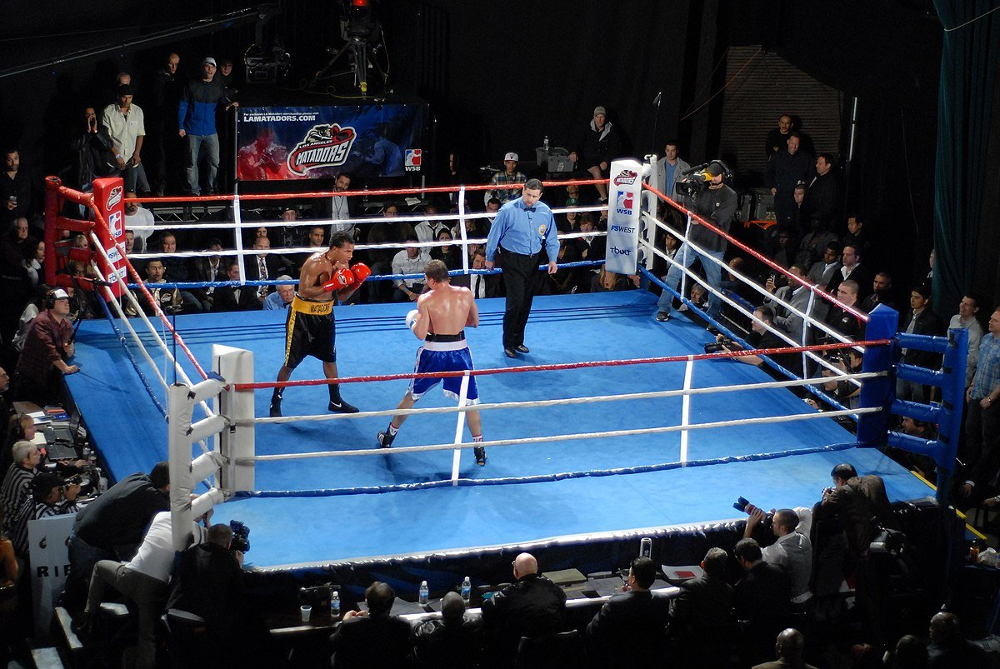

НОВОСТИ БОКСА
Хилл — случайный чемпион или недооценённая звезда? Кто возглавляет турнир UFC 300
Боец по прозвищу «Сладких снов» удивит Алекса Перейру. В ночь на 14 апреля в Лас-Вегасе на «T-Mobile Arena» пройдёт юбилейный турнир UFC 300, который обещает стать исторически успешным. Возглавить столь крупный ивент выпало действующему чемпиону в полутяжёлом весе Алексу Перейре и экс-обладателю титула Джамалу Хиллу. С Перейрой всё более-менее ясно. Несмотря на то что он провёл очень мало боёв в промоушене, бразилец является чемпионом уже в двух весовых категориях и имеет за плечами приличную фан-базу. А вот кто такой Джамал Хилл до сих пор не всем ясно, хотя он тоже был чемпионом UFC. Так что пора в этом немного разобраться. У Хилла нет за плечами классической для ММА базы: он не боксёр, не кикбоксёр, не борец. В своё время он занимался баскетболом и дрался на улице — вот и вся база. Не став профессиональным баскетболистом, Джамал отправился подтягивать навыки в ММА: «Я прошёл не одну уличную драку. Это приносило огромное удовольствие, так что решил, почему бы не получать за это ещё и деньги». Почему нельзя пропускать UFC 300: В UFC Хилл попал через Претендентскую серию Даны Уайта. Боец с забавным прозвищем «Сладких снов» и рекордом 5-0 без шансов разобрал Александра Поппека и начал свой путь в лучшем промоушене планеты. За три года Джамал провёл семь поединков в UFC, один из которых был признан несостоявшимся из-за того, что Хилл попался на запрещённых веществах и получил дисквалификацию на полгода. Ещё один бой американец проиграл — Полу Крэйгу, который в буквально смысле едва не оторвал Джамалу руку и забил его в партере. Позже Хилл сказал, что то поражение стало уроком, так как он смотрел на соперника свысока. Все остальные бои были выиграны, причём четыре из пяти — нокаутами.
Несмотря на это, титульный шанс Джамала — чистое везение. Все ведь помнят, как закончился бой за вакантный титул чемпиона между Магомедом Анкалаевым и Яном Блаховичем. Ничья (и очень спорная) в том поединке буквально вынудила Дану Уайта тогда же объявить, что в январе за вакантный пояс сразятся Гловер Тейшейра и Джамал Хилл, занимавший на тот момент седьмое место в рейтинге. Надо сказать, что американец сполна воспользовался подарком и просто разнёс ветерана, который почти в каждом раунде был близок к поражению, но в итоге прошёл всю дистанцию.Хилл донёс 232 удара, что является рекордом для полутяжёлого веса и просто переработал Гловера. Победа была более чем убедительная. Джамал стал новым королём дивизиона. Как позже выяснилось — ненадолго. Летом Хилл получил тяжёлую травму, разорвав ахиллово сухожилие, и по-джентльменски отказался от пояса, чтобы не задерживать дивизион. Пояс снова стал вакантен, и тогда его подобрал Алекс Перейра. Что удивительно, победа Джамала в титульнике не убедила практически никого в том, что это боец высокого уровня. Над чемпионом UFC откровенно посмеивался боец Bellator Кори Андерсон: «Сладенький Джамал, поговорим о математике в ММА. Разве Пол Крэйг не сломал тебе руку? Значит, он лучший. Ты выиграл пояс у 44-летнего парня. Кого ещё ты победил? Никого!» Алекс Перейра не так давно заявлял, что не считает Хилла бойцом уровня топ-3 дивизиона: «Он не второй. Не знаю, на какую позицию я бы его поставил. Но точно не выше четвёртой. Если бы мне пришлось выбирать соперника для дебютного боя в этом дивизионе между Хиллом, Блаховичем и Прохазкой, то я бы выбрал именно Джамала».
А российский боец Иван Штырков удивляется, что Хилл в принципе находится в топе: «Перейра сейчас на жутком хайпе, и в стойке он очень опасен. Хилл… вообще не знаю, как он залетел в топ. У него уровень не чемпионский. Очень скоротечно всё получилось, что ли, есть вопросы к его топовому уровню. Перейра должен забирать. Опять же, может быть, Хилл включит борьбу. Посмотрим». Чем опасен боец, который просто миксует всевозможные удары под разными углами? Джамал часто дерётся очень нестандартно. У него большой размах рук (больше 2 м), что позволяет держаться на дальней дистанции и резко сближаться с соперниками, заряжаясь на удар с дальней руки. Для своей комплекции Хилл удивляет скоростью и тяжестью ударов. Зачастую это правый хук за руку, который нередко доходит до цели. Плюс Джамал выдаёт хороший объём и наносит в среднем больше семи ударов за минуту, а пропускает в два раза меньше.Ещё один плюс — Хилл отлично миксует вышеописанные атаки с ударами коленями и локтями, работа в тайском клинче у него поставлена здорово. Джамал любит заходить в опасные размены, но зачастую ему помогают быстрые руки, за счёт чего он опережает оппонентов, и крепкая голова — Хилла ещё никто не ронял. Это серьёзное подспорье в бою с Перейрой, который немало пропускает и тяжело бьёт в ответ. Ещё один плюс в том, что Джамал — левша. Алекс не привык биться с левшами, во всяком случае в UFC у него такого опыта нет. А значит, бразильцу будет не очень удобно отбивать ногу Хиллу. Джамала нельзя недооценивать. Вопросы к его оппозиции есть, но это боец хорошего уровня, способный удивить абсолютно любого бойца в полутяжёлом весе. Минус для Джамала в том, что Перейра бьёт явно потяжелее, чем предыдущие соперники Хилла, и мы не знаем, в какой форме американец подходит к этому бою, всё же простой составил почти полтора года. Более того, Джамал столкнулся с тяжёлой травмой, и он неоднократно говорил, что для полного восстановления ему нужно больше времени, а потом неожиданно оказался в мейн-ивенте апрельского турнира. Причём сам же рассказывал, что получил это предложение буквально за день до того, как всё было объявлено. Большой риск, который может не оправдаться.«Мне очень интересен этот поединок. Джамал Хилл чертовски опасен. Посмотрите его бой с Гловером Тейшейрой. Джамал доминировал над ним, а ведь Гловер очень хорош. По какой-то странной причине люди недооценивают Хилла. Я этого не понимаю. Слышал, что люди сомневаются в его нокаутирующей силе. Но посмотрите, как он вырубил Уокера — Джонни упал так, словно его подстрелил снайпер. Джамал — нокаутёр, это точно. Чертовски опасный человек. Это большой и высокий боец, но он умеет двигаться. Мне интересно, почему многие считают, что Перейра переедет его», — заявил Джо Роган в своём подкасте. Хилла действительно недооценивают, и сейчас он получает шанс превратиться в полноценную звезду и доказать, что его титул — не случайность. А перед Алексом Перейрой стоит другая задача — остановить Джамала и разрушить «проклятие Джона Джонса». После Костяного ни один чемпион не смог защитить пояс в бою с полутяжеловесом. Справится ли Перейра или Хилл вернётся на трон?
предыдущая следующая